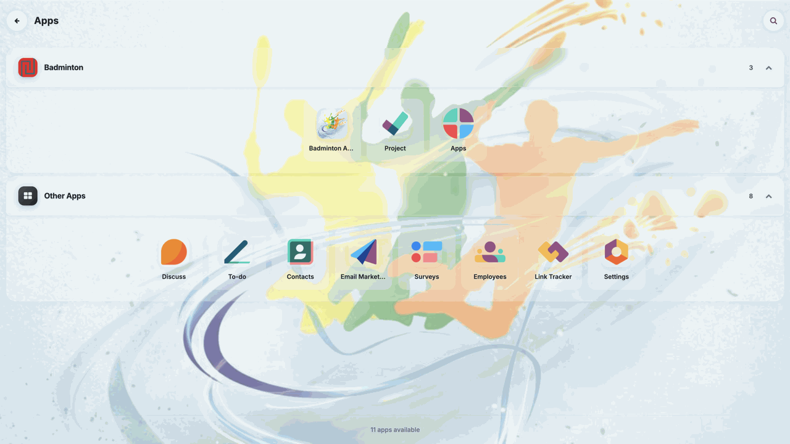
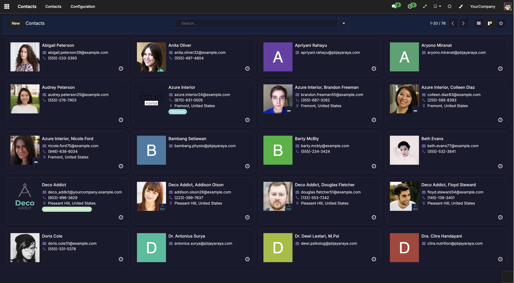
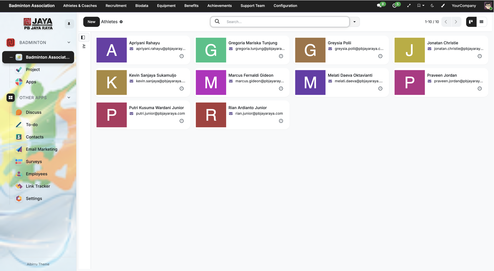
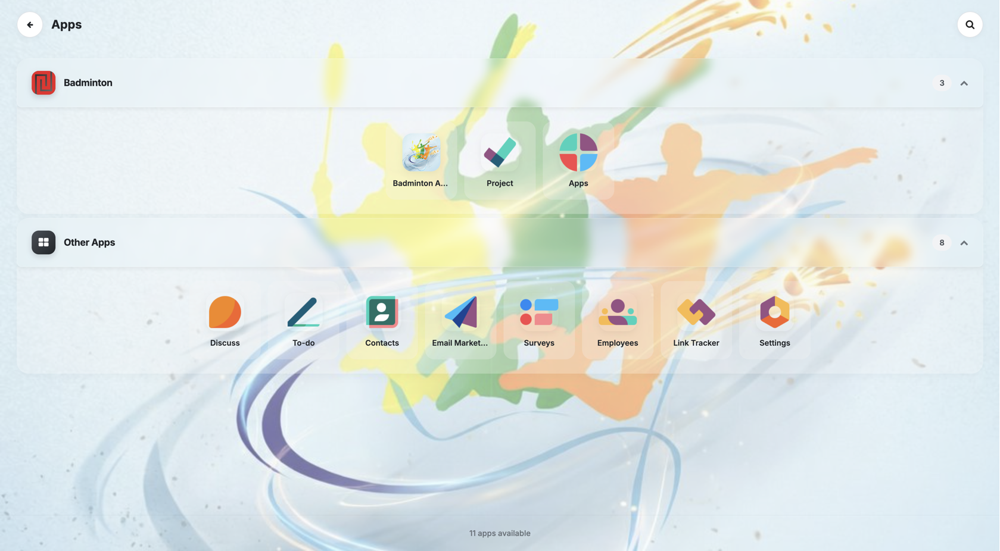
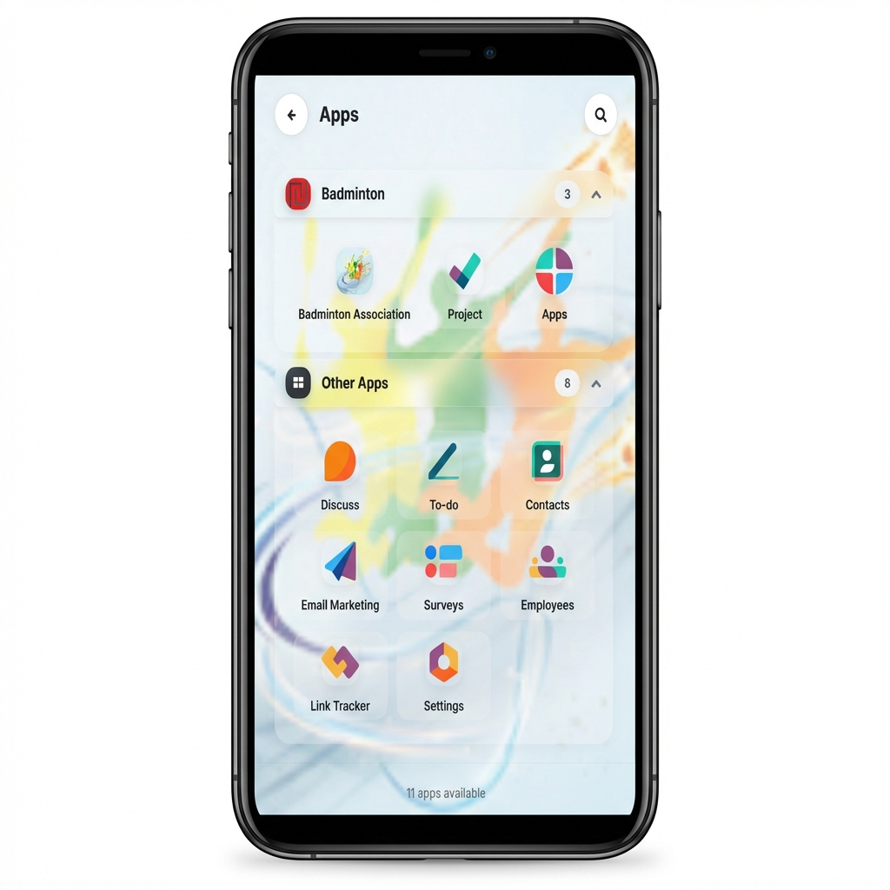
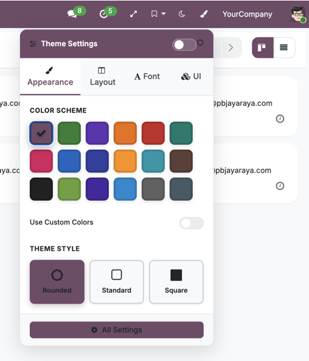
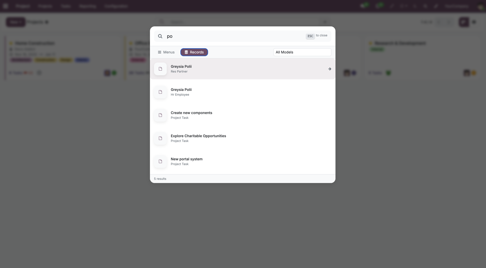
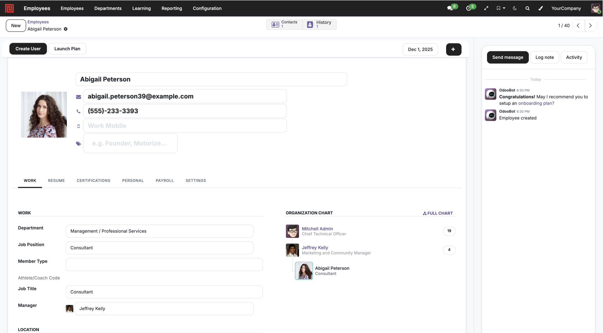
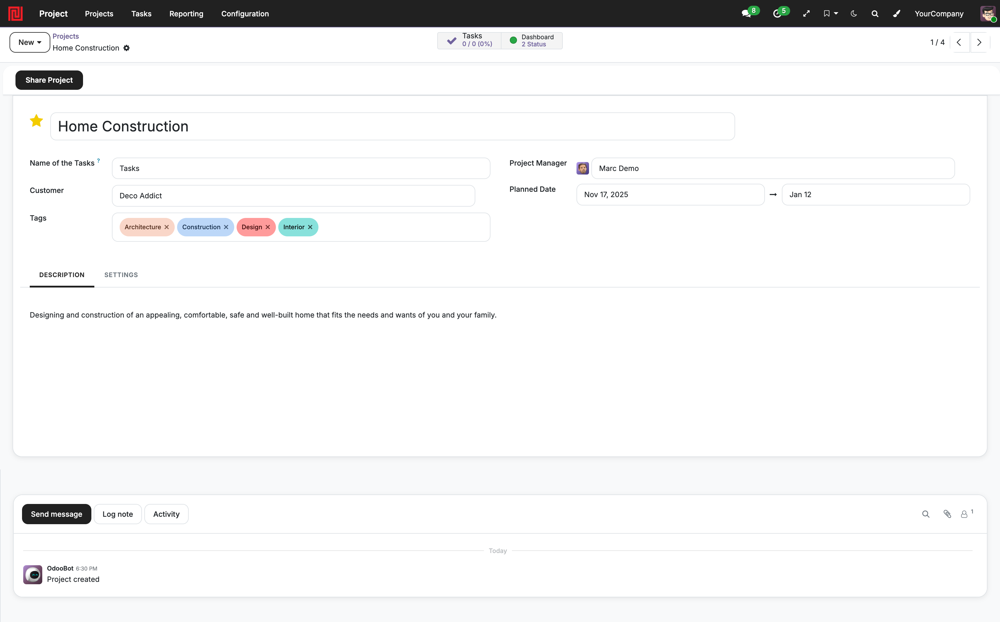

Beautifully functional. A premium Odoo 19 backend theme designed for clarity, speed, and deep personalization.

Enterprise-grade UI/UX — open and free for Odoo Community and Enterprise.
Reduce eye strain with a scientifically calibrated dark palette. High-contrast borders and muted backgrounds keep your data readable in low-light environments.



Don't just view data — interact with it. Forms, kanban boards, and dashboards are fully optimized for touch with bottom-sheet menus and swipe gestures.

Control every pixel without coding. Adjust primary colors, fonts, radius, and density instantly.

Search menus, records, contacts, and more. Use Ctrl + K or the systray icon.

Never lose context when scrolling through long lists.
Sticky Headers: the table header freezes at the top of the screen, so you always know which column you're looking at.
Optimize interface density to match your working style or device.
Density Control: "Compact" for data-heavy work or "Comfortable" for touch.
Full-Screen Mode: toggle distraction-free mode from the systray.
Optimize your workspace based on screen size.

Maximizes vertical space on wide monitors.

Classic layout, automatically applied on smaller screens.
Actively maintained and tested against Odoo 19 Community and Enterprise.
Upgrading: no data migration is needed. Existing installations keep working exactly as before, because the new policy defaults to Each user can personalize. After changing the policy, ask users to reload their browser tab so the systray reflects it.
Upgrading: this release includes a data migration for bookmark names. Upgrade the module normally (Apps → Albirru Backend Theme → Upgrade). If icons or colours look stale afterwards, force a browser refresh so the regenerated assets are picked up.
Initial public release for Odoo 19 — true dark mode, vertical sidebar or horizontal top menu, smart app drawer with custom groups, global search, live theme customizer, sticky list headers, configurable chatter position, and a mobile-first responsive layout.
We released the Albirru Backend Theme as free and open-source software (LGPL-3). Use it, customize it, and ship it in your own projects — no license fee, ever.
Albirru Solutions is a Jakarta-based IT services company crafting better Odoo experiences.
Credibility rooted in experience — end-to-end technology services under one partner.
Custom apps, ERP & Odoo implementation, API integration, and Flutter mobile apps.
Cloud migration, high-availability design, server management, backups, and network design.
IT outsourcing, helpdesk support, 24/7 monitoring, maintenance, and procurement consulting.
Security audits, vulnerability assessments, firewall management, data protection, and training.
The theme is free — we love helping customers build the perfect Odoo environment. Get professional implementation, customization, training, and support from Albirru Solutions.
Albirru Backend Theme · Free & Open Source (LGPL-3) · © Albirru Solutions (Irwan Syah)